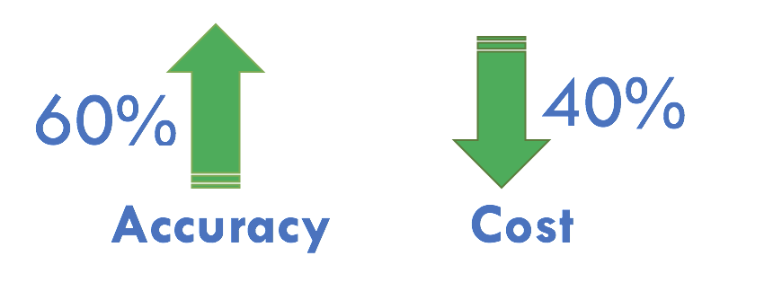
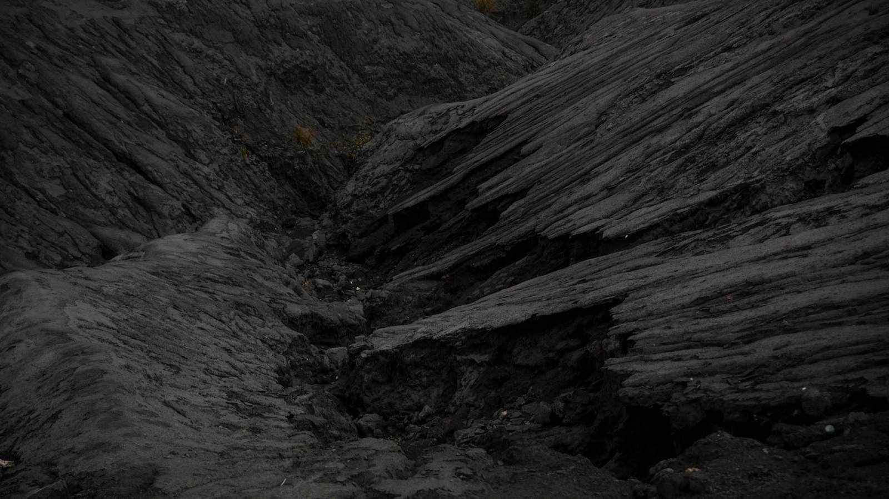
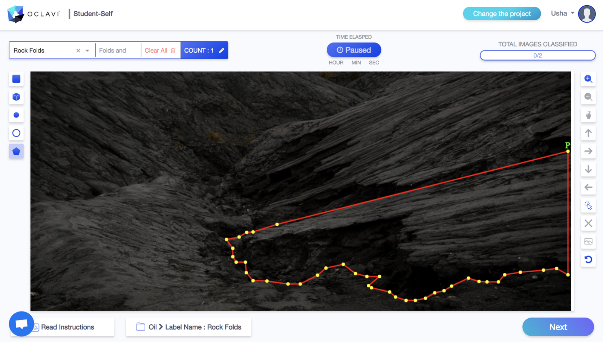
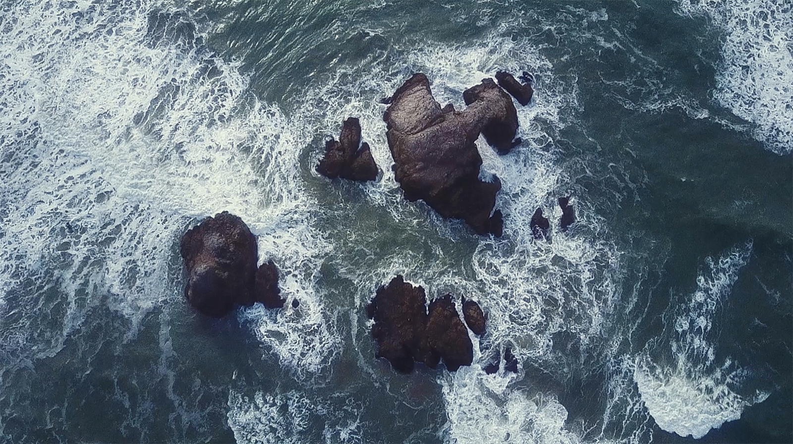
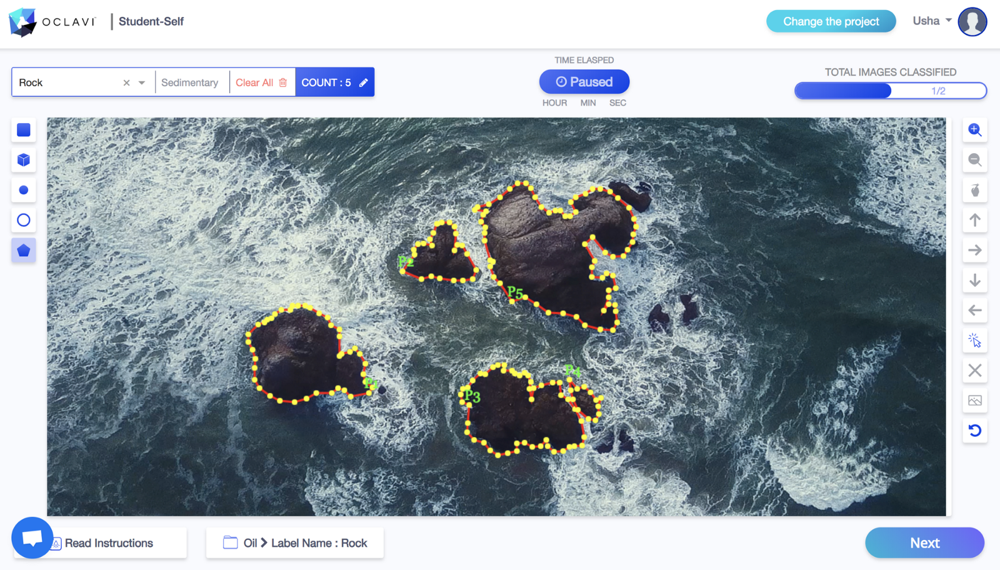

Hydrocarbon exploration made easy with Artificial Intelligence
As per the oil market report of International Energy Agency, global oil demand is estimated to increase by 1.5 million b/d to 99.3 million b/d in 2018. [1]
Scientific observation says that there are around 5,500 varieties [2] of naturally occurring minerals on earth. Do we know about all? Is there any shortcut to find out oil and gas depositions?
Hydrocarbon exploration is an expensive affair; hence it has to be initiated only after costs and benefits are assessed. There are various methods to identify the sources of oil and gas like Well logging, remote sensing, Gravity survey, magnetic survey, seismic survey etc. which involves high costs and efforts.
Exploring oil and gas under land or within the seabed using surface methods is based on two main principles.
One is to survey geological features of the land to determine sedimentary rock formation, repeated folds, and faults. The other is to identify the hydrocarbon seepage on the earth surface.
Using AI in deep-sea exploration may not give instant results but it attempts to give a boost to the detection know-hows. For example, if a cop wants to catch hold of criminals they first attempt to track their voice and text transactions with kith and kin. They attempt to catch hold of their close ones to trap the criminal.
Similarly, Artificial Intelligence attempts to identify natural seeps that occur when oil escapes from the fractured rocks found in ocean bed or on the ground. These seeps become tar-like deposits which are the best indicators to find energy sources.
Benefits by using Artificial intelligence in Oil and gas industry

There will be a increase of 60% accuracy with 40% reduction in cost
Using Annotation tool to train computer vision models
A trained computer vision model can identify the indicators of energy sources. The efficiency of the model depends on the data that is annotated and fed for system learning.

Formation of sedimentary rocks, fold, and faults

After annotation with OCLAVI
Tar deposits and Sedimentary rocks are formed in various shapes. Because of instability in shapes, polygon tool is a preferred tool to annotate such images for object recognition.

Sedimentary rocks before annotating

Annotating Sedimentary Rocks using OCLAVI
By annotating with polygon tool irregular object shape detection is possible accurately, which helps in training models learn and detect the indicators of energy sources.
Usage of gas in the primary energy mix is likely to increase from 22% to 25%. Shaping the world energy system with AI revolution brings an increase in global GDP by 2030. [3]